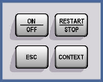

Application Control Keys
The keys above the rotary knob control measurements, generators, signaling applications, and control elements in dialogs.

- ON | OFF – starts a measurement from the OFF state or aborts a running measurement. Switches generators or signaling generators on or off and selects/clears checkboxes in dialogs (toggle function).
- RESTART | STOP – restarts a measurement in the RDY state or stops a running measurement
- ESC – terminates the current stage of a session, e.g. by closing a dialog
- CONTEXT – for future extensions